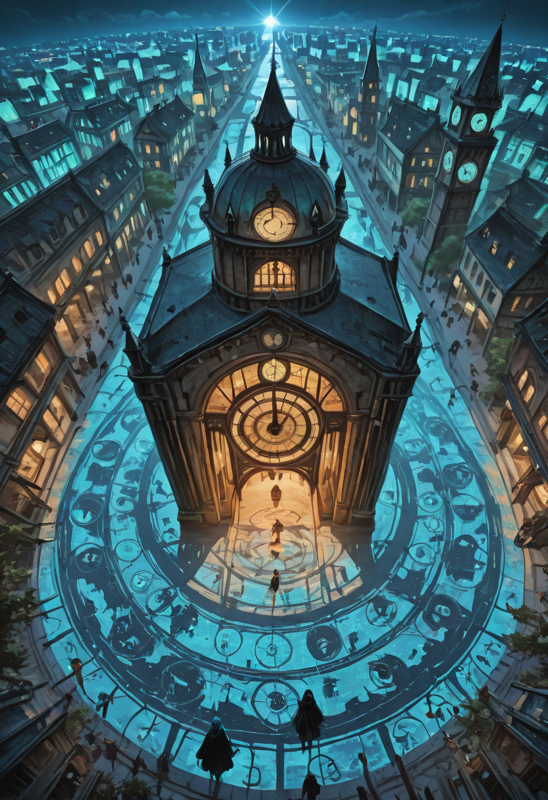
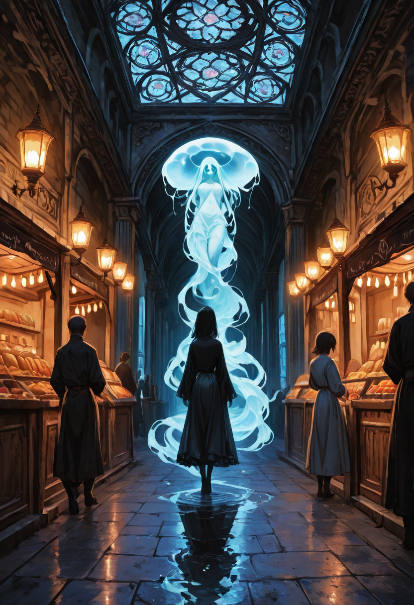
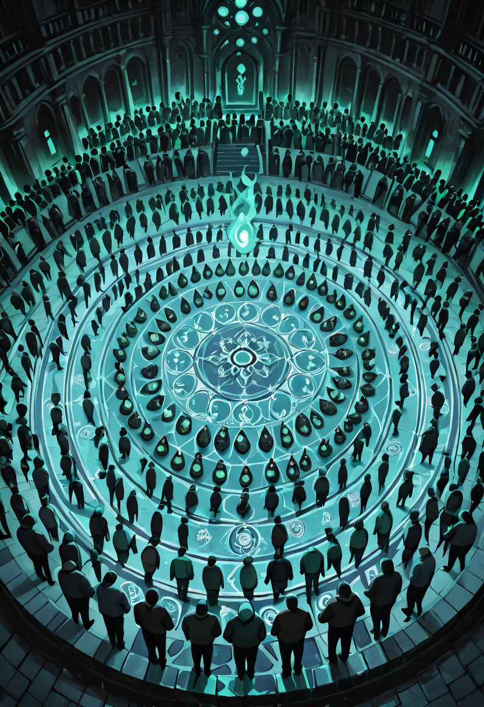
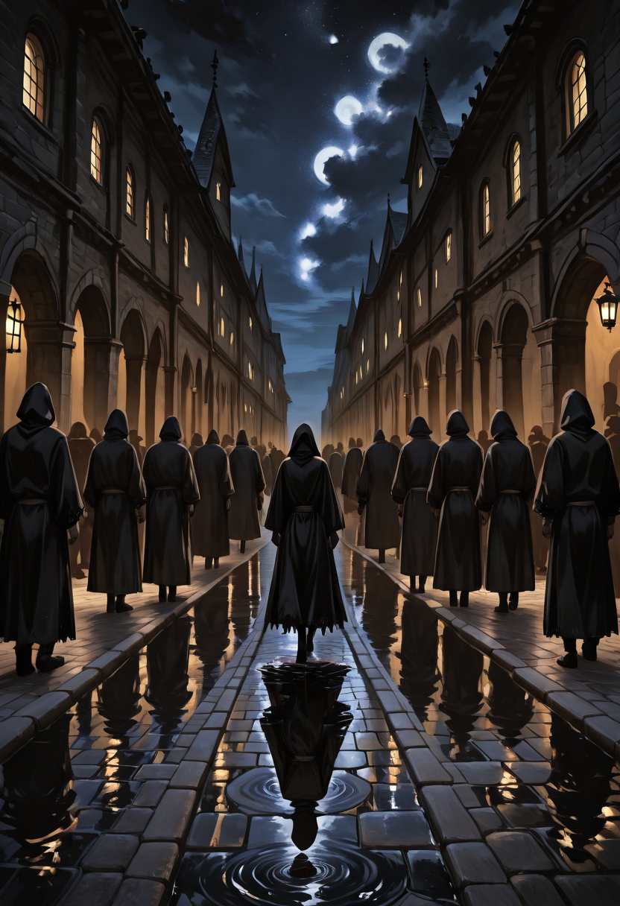
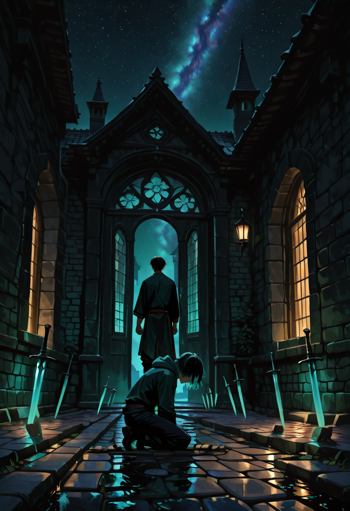

A society where the living and the undead breathe together, governed not by fear or force, but by the shared, desperate will to exist.

Day and Night
The city never sleeps, but it breathes in two tempos. The coexistence of the living and the undead has created a social system based on natural shifts that maximize productivity without oppression.
The Breath of the Sun: During the day, activities are primarily managed by living citizens and the Amber Souls, who draw strength from the light. Markets are bustling, schools are open, and traditional agricultural activities take place.
The Breath of the Moon: When the living go to sleep, the city changes its face. The undead do not require sleep, but rather periods of meditation. The night is dedicated to heavy labor, construction, surveillance, and magical arts. Will-o'-the-wisp lanterns are lit and the noise drops, replaced by a diligent and efficient silence.

Identity and Purpose
Citizens are born , or reborn , nameless. Identity is not a gift, but an achievement. At birth, a single directive is whispered to them, serving as a moral compass for their entire existence:
Apathy is the true enemy. No one desires idleness; on the contrary, every citizen , living or undead , seeks to contribute to the best of their abilities toward the common goal. A fundamental aspect of their magical biology is Ethereal Hunger: even the undead must feed. Not on flesh or blood out of bestial craving, but on food to fuel the ethereal energies that bind their soul to the body. This biological cycle has allowed for perfect integration with the living, creating a mixed and functioning society with shared agricultural and culinary supply chains.

Politics & Silent Theocracy
The Empire is, paradoxically, an autonomous democracy devoid of tyranny, yet it lives in the shadow of a superior and tangible entity: Malicott, the Forgotten Goddess. In the social hierarchy, the most valued traits are not brute strength or magical power, but the virtues of the soul: Pride, Kindness, Nobility, Courage, Loyalty, Resilience, and the Spirit of Sacrifice.
All citizens pursue a single, deafening collective direction: We Want to Live. This will is so ironclad that it often manifests as defensive aggression; when diplomacy fails, the Forgotten cling to existence with a ferocity that only those who have already faced death can possess.
Though without any obligation, Malicott cares about the progress of her people. In times of need, she acts as a psychic conduit with the most valiant individuals of the kingdom during what is known as The Council of Whispers. During this episode, no one speaks, but everyone projects their intentions and motivations. Democracy here is not "the majority wins" , but "harmony prevails."

The Unwritten Laws
There are no prisons, no lawyers, no judges. And yet, the crime rate is nearly zero. Because in a society where death has already been defeated, the worst penalty is not execution, but Isolation from the Connection. Though unwritten, every citizen instinctively knows the Three Invisible Rules from the moment of their rebirth:
Punishment , the White Exile , is absolute social invisibility. The Mother Tree withdraws its empathetic connection. Citizens instinctively begin to ignore the guilty, not out of malice, but as if they had become a ghost to ghosts. This absolute loneliness drives the culprit to either redeem themselves with a spectacular act of generosity, or flee into madness and permanent death beyond the Empire's borders.

Economy of Merit
There is no minted currency that can be hoarded to generate passive power. The economy is based on Seeds of Merit , not physical objects, but a sort of "magical reputation" tracked by the Mother Tree. Those who contribute emanate a subtle aura, visible to others, but not gathered if the action is done out of pure selfishness.
Those with a strong aura gain priority access to rare resources, better weapons, or luxury housing. Exchange is free: a Mailform blacksmith gives a weapon to a warrior not because he is paid, but because he knows that warrior will protect the forge. It is barter based on immediate trust.
The most illustrative case of this system is the story of Marly, an immigrant human merchant who secretly hoarded hundreds of divine swords. No guards came to his door. One morning, the baker simply didn't see him. People walked around him as one avoids a rock in the road. The roots of the Mother Tree grew overnight to seal his warehouse , not by force, but simply by reclaiming the wood. Three days of total invisibility in a crowd reduced him to desperation. On the fourth day, he brought every sword back to the central square, one by one, weeping. Only when he placed down the last sword did a child hand him an apple. He had returned to existence.
Management of the People
Lacking an oppressive central government, the Empire manages itself like a biological organism. Citizens are divided by function into four major groups:
The Root Weavers (Logistics & Agriculture) , Composed of the living and the Root-boned. They manage the cultivation of normal food and the synthesis of Ethereal Nectar to feed the undead. They are responsible for subsistence.
The Silent Bulwark (Defense & Order) , Primarily composed of the Ash Shells. Not a police force patrolling for fines, but a rapid reaction force that intervenes only in cases of external threat or severe internal violence, utilizing the full mobility of their bodies.
The Choir of Memory (Education & Culture) , Ghosts and elderly living. They maintain history, teach the newborns how the Empire works, and manage the theaters where memories of past lives are shared as a form of entertainment and communal lesson.
The Forgers of Sorrow (Crafting & Industry) , The almost exclusive domain of the Mailform. They build infrastructure and weapons. Being tireless and devoid of emotional distractions, their production is considered flawless , a perfection born from dedication, not indifference.